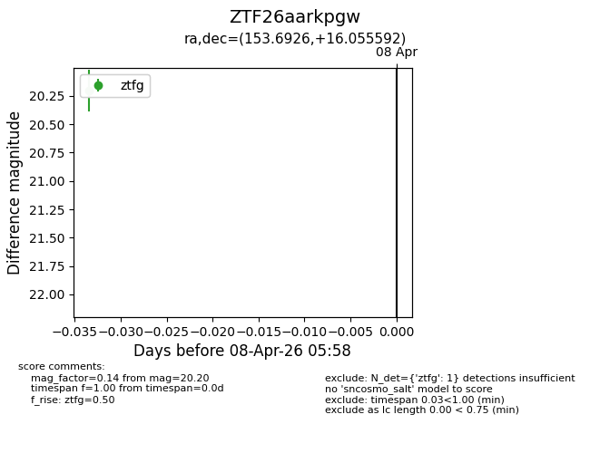
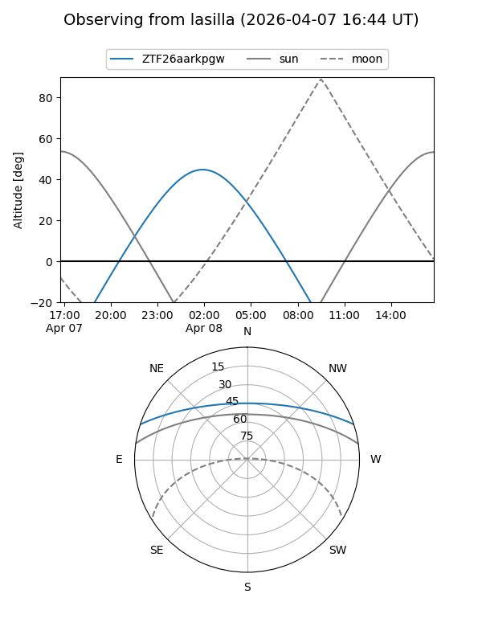
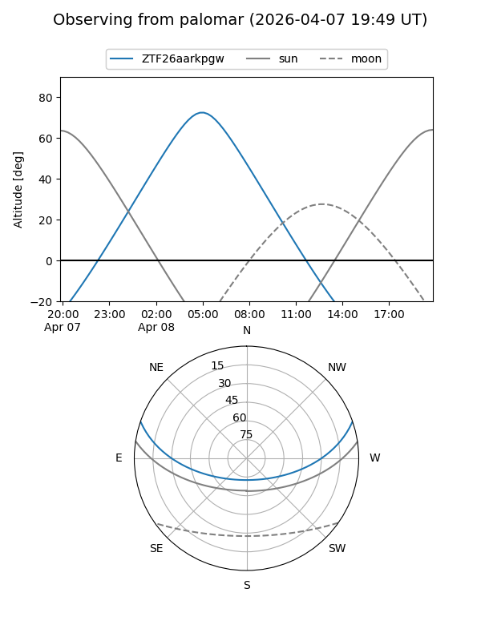
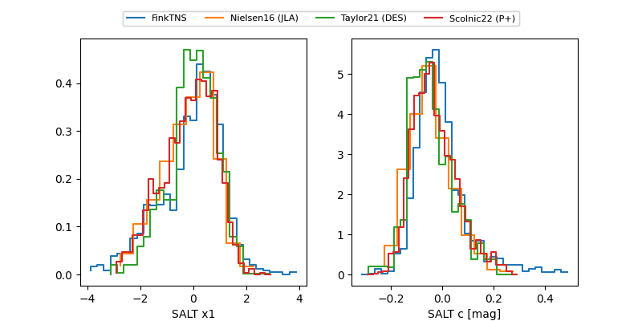

ZTF26aarkpgw
Target ZTF26aarkpgw at 2026-04-08 06:02
Aliases and brokers:
FINK: link
Lasair: link
ALeRCE: link
alt names
ZTF26aarkpgw (ztf,fink_ztf)
Coordinates:
equatorial (ra, dec) = 153.6926,+16.05559
equatorial (HMS+DMS) = 10:14:46.23,+16:03:20.13
galactic (l, b) = (221.6983,+52.11205)
Flags:
Photometry:
last ztfg=20.20
1 ztfg detections
Lightcurve

Visibility


Additional plots
